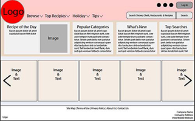
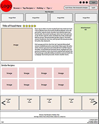
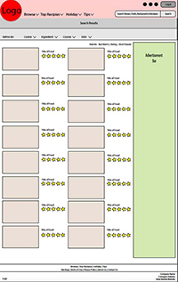
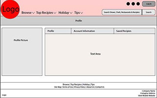
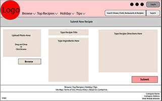

Study 2 - Food Recipe Website
Objective:
Project guidelines were to create a wireframe and mockup of a 5 page or more website that highlights best practices in user interface design.
Wireframes
Challenge:
I chose to design a food/recipe website for the challenge of working with large amounts of visual information. The goal for me was to keep users from getting lost. A user should be able to know where they want to go, what information they want to find, then find it without jumping through any hoops.
    